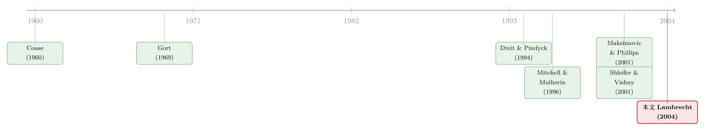

并购为什么总扎堆在好年景？——一道把「等待」算进期权的题
本文读的是 Lambrecht (2004, Journal of Financial Economics)：当并购的动机是规模经济时，合并的「收益」是产出价格的凸增函数，于是合并本身就是一个看涨期权。最优的行权时点，恰恰落在经济扩张、价格走高的时候——这就从纯理性、无摩擦、信息完全的角度，给「并购浪潮顺周期」这件事给出了一个干净的解释。而合并双方怎么分蛋糕（merger vs. 敌意收购），不只决定了各自的收益，还反过来推迟或提前了重组的时点。
1 一个老问题：并购为什么总是「扎堆」出现
过去一百年，美国并购活动经历了五次异常高涨的时期，人们习惯称之为并购浪潮 (merger waves)。这些浪潮有一个让人印象深刻的共性：它们几乎都和经济扩张同步，而在衰退里悄然退潮。Maksimovic 和 Phillips (2001) 给出了并购顺周期的进一步证据；Mitchell 和 Mulherin (1996) 则发现，行业层面的并购与重组率，和该行业承受的经济冲击直接相关。
这是一个被反复观察、却很少被「理论」讲清楚的事实。
首先，一个自然的诱惑是：把它归因于「市场犯错」。Gort (1969) 的经济扰动理论说，在剧烈变动的时期，股东对一只股票的真实价值会产生分歧，分歧催生交易。Shleifer 和 Vishny (2001) 更进一步，假设股票市场会错误定价潜在的收购方、被收购方及其组合，而经理人看穿了这种无效率、并借并购加以利用——并购浪潮于是由相对估值驱动。Morellec (2001) 把不确定性引入这个框架，把收购建模成「用一项资产换另一项资产」的期权。
但这里有一个 Brealey 和 Myers (2000) 提出的尖锐反问：如果并购是因为市场定价犯错，那熊市里也一样会犯错。既然如此，为什么我们在股市低迷时，看不到同样多的公司出来「抄底」捡便宜货？他们的结论很干脆：要给并购浪潮一个自洽的解释，还需要更多研究。
换句话说，「市场犯错」这条路解释了「有交易」，却解释不了「为什么交易偏偏挤在牛市」。本文的野心，是在完全信息、完全理性、没有任何错误定价的世界里，把顺周期重新推导出来。
本文（Lambrecht, 2004）选择的切入口非常具体：只看由规模经济驱动的并购。比如 2000 年 2 月沃达丰（Vodafone Airtouch）和德国曼内斯曼（Mannesmann）的合并——把两张网络拼起来，覆盖 25 个国家，语音、数据、互联网的收入一起放大；又比如 1999 年 11 月辉瑞（Pfizer）和华纳-兰伯特（Warner-Lambert）两家制药巨头的合并，为的是把研发、制造、营销和销售拧成一股绳。
2 把「合并」变成一个期权
要理解这篇论文，得先抓住它最核心的一步：把合并的收益，写成产出价格的一个凸增函数。
模型里有两家公司，生产用两种投入：一种可变（比如劳动 \(L\)），一种固定（比如资本 \(K\)，可以理解为电信公司的网络容量、药企的专利与销售网络、油企的储量）。生产函数是 Cobb-Douglas 形式 \(L_j^a K_j^b\)，关键在于两个参数的设定：
- 对可变投入是规模报酬递减：\(a < 1\)（受固定容量限制，光堆人没用）；
- 但当两种投入都可变时（比如两家公司合并、把各自的固定资本也凑到一起），规模报酬递增：\(a + b > 1\)。
正是这第二条，制造了合并的意义：两家一起干，能在不增加生产成本的前提下，产出比各自单干之和更多。
2.1 单干时的公司价值
每家公司的瞬时利润函数（Assumption 4）是
$$p_t L_j^a K_j^b - w_L L_j$$
其中 \(w_L\) 是单位可变投入的成本。对 \(L_j\) 求最优，得到投入需求
$$L_j = \left(\frac{a K_j^b p_t}{w_L}\right)^{1/(1-a)}$$
把它代回，最优利润流可以整理成一个干净的形式：
$$\left(a^{a/(1-a)} - a^{1/(1-a)}\right) w_L^{-a/(1-a)} K_j^{b/(1-a)} p_t^{1/(1-a)} \;\equiv\; \Pi(w_L, a)\, K_j^{y}\, p_t^{\gamma}$$
这里定义了两个贯穿全文的指数：
$$\gamma = \frac{1}{1-a}, \qquad y = \frac{b}{1-a}$$
由 \(a < 1\) 立刻得到 \(\Pi > 0\)、\(\gamma > 1\)。\(\gamma > 1\) 是全文的发动机——它意味着利润是产出价格 \(p_t\) 的凸增函数。
产出价格本身服从几何布朗运动 (geometric Brownian motion)：
$$dp_t = \mu p_t\, dt + \sigma p_t\, dB_t$$
其中 \(\mu < r\)、\(\sigma > 0\)，\(r\) 是无风险利率。假设利润全部分红、投资者风险中性，按 Dixit 和 Pindyck (1994) 的标准结果，单干公司（stand-alone）的价值就是未来利润流的贴现：
$$V_j(p_t) = \frac{\Pi K_j^y p_t^\gamma}{r - g(\gamma)}, \qquad g(\gamma) = \mu\gamma + \tfrac{1}{2}\sigma^2 \gamma(\gamma - 1)$$
只要 \(g(\gamma) < r\)（等价于 \(\gamma < \beta\)，\(\beta\) 见下文）价值就是有限的。
2.2 合并的「红利」长什么样
合并后那家公司，把两份固定资本合到一起：
$$V_m(p_t) = \frac{\Pi (K_1 + K_2)^y p_t^\gamma}{r - g(\gamma)}$$
于是合并的净收益（合并后价值减去两家单干价值之和）是
$$V_m(p_t) - V_1(p_t) - V_2(p_t) = \frac{\Pi\big((K_1+K_2)^y - K_1^y - K_2^y\big)\, p_t^\gamma}{r - g(\gamma)}$$
这个收益什么时候为正？当且仅当 \((K_1+K_2)^y > K_1^y + K_2^y\)，也就是
$$y = \frac{b}{1-a} > 1$$
即生产函数必须呈现规模报酬递增——有规模经济，才有协同。
注意这个收益里带着 \(p_t^\gamma\)，而 \(\gamma > 1\)。这意味着合并的好处是产出价格的凸增函数：经济繁荣时它以加速的方式上升，萧条时则塌缩。再叠加合并本身的固定成本 \(X_j\)（投行费、律师费、整合成本，一次性、且沉没），公司就有了「权利而非义务」去合并——这正是一个看涨期权的全部特征。
这是整篇论文的转折点。一旦把合并的收益看成期权的标的，「该不该并、什么时候并」就不再是一道静态的 NPV 题，而是一道最优行权时点的实物期权题。放弃合并要损失更高的利润（行权的动力），而合并的不可逆性（沉没成本）又是延迟的理由——最优时点在两者间取平衡。
3 模型：从期权价值到最优时点
这一节我们把最关键的推导一步步走完。
总的合并剩余（Proposition 1）是
$$S(p_t) = \max\big[V_m(p_t) - V_1(p_t) - V_2(p_t) - X_1 - X_2,\; 0\big]$$
设合并的行权阈值为 \(p^*\)：一旦状态变量 \(p_t\) 从下方触及 \(p^*\)，就立即合并。用标准实物期权方法可证，联合的合并期权 \(OM\) 满足一个二阶常微分方程，配上价值匹配条件 (value-matching condition)：
$$OM(p^*, p^*) = S(p^*)$$
即期权被行权的那一刻，其价值正好等于实现的剩余。由此可解出期权在行权前（\(p_t \le p^*\)）的形式：
这个表达式很美：期权的当前价值 = 行权时的剩余 × 一个折现因子，而这个折现因子 \((p_t/p^*)^\beta\) 同时还能被解读为未来某天触及阈值的概率。\(\beta\) 是特征方程
$$\tfrac{1}{2}\sigma^2 x(x-1) + \mu x - r = 0$$
的正根。
对 \(p^*\) 求最优（最大化期权价值），就得到本文的核心结论之一（Proposition 2）：
$$p^* = \left[\frac{\beta (X_1 + X_2)\big(r - g(\gamma)\big)}{(\beta - \gamma)\, \Pi\big((K_1+K_2)^y - K_1^y - K_2^y\big)}\right]^{1/\gamma}$$
由于 \(\beta / (\beta - \gamma) > 1\)，这个合并阈值严格高于 Marshall 式的盈亏平衡点——也就是说，最优做法不是「一有协同就合并」，而是等到价格足够高、期权足够价内才动手。合并的净现值因此严格为正。
这就是顺周期的来源，而且它不需要任何市场犯错。在完全信息下，合并被市场完全预期，没人能套利（合并公告对股价没有冲击）。仅凭「协同收益是价格的凸函数」+「合并不可逆」这两条，理性公司就会选择在价格上行、经济扩张时合并。周期性的产品市场，于是自动生成了一波波顺周期的并购浪潮。
这和 Maksimovic & Phillips (2001) 的经验证据一致；另一种等价的叙事是 Mitchell & Mulherin (1996)：一次重大的技术革新会突然抬高规模报酬参数，从而压低合并阈值、引爆一波浪潮。
比较静态也完全符合实物期权理论的直觉：更高的合并成本 \((X_1+X_2)\) 推迟合并；更大的协同加速合并。不确定性 \(\sigma\) 有两个相反的效应——它压低 \(\beta\)、抬高滞后因子 \(\beta/(\beta-\gamma)\) 从而推迟投资（实物期权的经典结果）；但它又通过利润对价格的凸性抬高增长率 \(g(\gamma)\)，即所谓的 Jensen 不等式效应，加速投资。对经济上合理的参数，前者通常占上风，故波动率上升整体推迟合并。
（关于「波动率越高、越要等待」在投资时点上的一般逻辑，可参见《竞争越激烈，反而越要「等」？——把实物期权和竞争装进同一个均衡》；而把「顺周期的时点选择」用在另一类公司决策上的，可参见《新股的「冷热」，其实是投行在替你算的一笔账》。）
4 分蛋糕：怎么分，竟然影响什么时候分
到这里，论文已经回答了「何时合并」。但真正让它从一篇标准实物期权论文里跳出来的，是下一个问题：合并的收益怎么在两家之间分？而分法本身，会不会反过来影响时点？
模型考虑两轮谈判。第一轮，两家管理层一起定时点，目标是把要分的总蛋糕做到最大——因此他们一致选择第 3 节那个全局有效阈值 \(p^*\)（由 Coase (1960) 定理，无摩擦时双方总能达到这个有效结果）。第二轮，定分法：合并后公司里，每家拿到的所有权份额 \(s_i\)（\(s_1 + s_2 = 1\)）。
每家公司 \(i\) 在合并时拿到的剩余是
$$S_i(p_t, s_i) = \max\big[s_i V_m(p_t) - V_i(p_t) - X_i,\; 0\big]$$
这同样是一个看涨期权，于是每家也有自己的行权阈值 \(p_i^*\)。问题的关键在于：只有一个特定的分法，能让两家的私人最优阈值都正好等于全局有效阈值 \(p^*\)。这要求满足帕累托最优条件
$$\left.\frac{\partial OM_i(p_t, p_i^*, s_i)}{\partial p_i^*}\right|_{p_i^* = p^*} = 0 \quad (i=1,2), \qquad s_1 + s_2 = 1$$
本文证明这样的分法唯一存在（任何其他分法都会让阈值低效地推后，把蛋糕做小，至少让一方更糟）。这个唯一分法（Proposition 3）是
$$s_i = \frac{X_i\big[(R_{ij}+1)^y - 1\big] + X_j R_{ij}^y}{(X_i + X_j)(R_{ij}+1)^y}, \qquad R_{ij} \equiv \frac{K_i}{K_j}$$
这套做法比经典的 Nash (1950) 讨价还价解多了一个优点：它不需要外生地指定两家的相对议价能力，分法是内生地、由「让双方都愿意在有效时点行权」这个激励相容条件解出来的。
这个闭式解还能读出两条很符合直觉的比较静态：
- \(\partial s_i / \partial R_{ij} > 0\)：一家公司越大（固定资本越多），合并后份额越大。极限上，当 \(y \to 1\)（协同趋于零）时，\(s_i \to K_i / (K_i + K_j)\)——份额正比于各自的资本存量。
- \(\partial s_i / \partial X_i > 0\)：一家公司的合并固定成本越高，份额越大。直觉是：高成本抬高了它那份期权的行权价，为了让期权足够价内，它不仅要求更高的阈值，也会要求新公司里更大的份额作为补偿。
（份额与「谁出多少」「谁更想成交」之间的微妙关系，也出现在别处——比如《一笔提前卖出的股权，是为了让你将来「抢着加价」》。）
4.1 当「合并」变成「敌意收购」
最后，论文比较了两种不同的重组机制：双方友好协商的合并 (merger)，以及目标方先承诺底线条款、收购方再据此决定时点的敌意收购 (hostile takeover)——后者像极了目标方管理层「开价、不到价不交权」的情形。
结论是一个漂亮的反转：在敌意收购里，目标方会要求更大的所有权份额；作为回应，收购方要求总重组剩余更大才肯动手——于是收购被推迟了。本文给出了收购方与被收购方累计收益的闭式解，并证明合并与收购的累计收益由三个效应共同决定：滞后效应 (hysteresis)、规模效应 (size)、协同效应 (synergy)。目标方在收购中的溢价 (bid premium)，随产品市场不确定性、收购方/目标方的相对规模、以及协同效应而上升。
所以同样是规模经济驱动的重组，「合并」和「敌意收购」在一波浪潮里，理论上应该出现在不同的阶段。
5 市场势力：再加一把火
基准模型假设公司是价格接受者。但现实里，合并往往不只创造协同，还增加市场势力。本文在第 5 节放松了价格接受者假设，引入需求函数
$$p(q) = \frac{p_t}{q^\epsilon}, \qquad \epsilon > 0$$
当价格弹性 \(\epsilon = 0\)，就退回到价格接受者的情形。论文考察两家对称双头垄断者合并成一家垄断者的情形，结论是：市场势力改变了结果的数量特征，但没改变质量特征。具体说，市场势力强化了合并动机、加速了并购——因为它在协同之外，提供了合并的第二个理由。
（顺带一提：合并究竟是「把饼做大」的协同，还是「把价抬高」的反竞争，是一个长期的经验争论，可参见《并购是为了把饼做大，还是把价抬高？——答案藏在「产品像不像」里》。）
6 文献脉络
把这篇论文放进它所属的那条河流里看，会更清楚它的位置。
最上游，是对并购浪潮的经验观察与「市场犯错」式解释：Gort (1969) 的经济扰动理论，到 Shleifer & Vishny (2001)、Morellec (2001) 的「市场错误定价驱动并购」。这条线擅长解释「有交易」，却在 Brealey & Myers (2000) 那个「熊市为什么没人抄底」的反问前卡了壳。与此并行，是对并购顺周期的经验确认：Mitchell & Mulherin (1996) 把并购与行业冲击挂钩，Maksimovic & Phillips (2001) 直接记录了并购的顺周期性。
另一条上游，是不确定性下的投资理论：Dixit & Pindyck (1994) 把实物期权方法系统化，让「等待的价值」成为投资时点的核心；这套连续时间方法随后被用于公司重组（Smith & Triantis, 1995；Grenadier, 1996；Lambrecht, 2001）。

本文（Lambrecht, 2004）站在这两条河的交汇处：它不靠市场犯错，而是用实物期权 + 博弈论，证明在完全理性、完全信息下，规模经济驱动的并购天然就是顺周期的，并且把「时点」和「条款（分法）」放进同一个框架里内生地一起解出来。它对 Brealey & Myers 之问的回答是：熊市里没人抄底，不是因为没有便宜货，而是因为协同收益的凸性让「等待」在低价时严格占优。
评论与延伸（Q&A + 研究方向）
(a) 几个可能的疑问
Q：这和 Shleifer-Vishny 那套「市场错误定价驱动并购」到底差在哪？
差在「理性」二字。Shleifer-Vishny (2001) 需要股市系统性错误定价、经理人借机套利；本文是完全信息、市场完全预期合并（合并公告对股价零冲击）。同样推出顺周期，本文不靠任何认知偏误或套利——它把顺周期归到协同收益对价格的凸性，而非市场犯错。这正面回应了 Brealey-Myers 对「错误定价」路径的质疑。
Q：「合并阈值高于盈亏平衡点」是不是只是实物期权的老套路？
滞后因子 \(\beta/(\beta-\gamma) > 1\) 确实是实物期权的标准结果，这部分不新。本文真正新的，是把这个时点和分蛋糕的条款耦合起来：证明存在唯一的份额分法 \(s_i\) 能让双方都在全局有效时点行权，且无需外生指定议价能力——这是它超出「单主体实物期权」的地方。
Q：为什么敌意收购反而比友好合并更晚发生？
因为目标方在收购里能「先开价」，要更大的份额；收购方为了让自己那份期权仍然划算，就要求更大的总剩余才肯行权，而更大的剩余意味着更高的价格阈值——于是时点被往后推。直觉上，谈判结构（谁先承诺）改变了双方期权的行权价，从而改变了时点。
Q：模型只适用于横向、规模经济型并购，这个限定是不是太窄？
是的，这是自觉的取舍。Assumption 3 让两家在合并前后受同一个不确定性源驱动，本质上锁定在横向合并；协同也专指规模经济（\(a+b>1\)）。多元化并购、纵向并购、纯财务动机的并购都不在射程内。好处是换来了干净的闭式解和清晰的机制。
Q：「波动率上升会推迟合并」——这和「并购扎堆在高波动行业」矛盾吗？
不必然矛盾。模型里 \(\sigma\) 有两个相反效应（滞后效应推迟、Jensen 效应加速），净效应取决于参数，本文论证一般情况下推迟占优。但「时点被推迟」说的是对单笔合并；而高波动行业里协同的期权价值更高、阈值一旦触及收益更大，截面上仍可能观察到更多并购。把「时序推迟」和「截面更多」分开看，就不冲突。
Q：合并公告对股价零冲击，这个预测现实吗？
这是完全信息假设的直接产物（合并被完全预期、完全计入股价）。现实里并购公告显然有显著的股价反应——所以这条预测更像是一个基准/反事实：它告诉我们，观察到的公告效应有多少必须归因于信息不对称或意外，而非协同本身。把它当作「零信息摩擦」的标尺，比当作字面预测更有用。
(b) 几个可能的研究问题与提案
1. 把「顺周期合并时点」搬到信用市场：债权人怎么定价这个期权？
【经济故事】本文整套逻辑是在股权视角下展开的，但合并的不可逆沉没成本、顺周期时点，对债权人同样关键——合并改变了资产规模、协同现金流的凸性，也改变了违约边界。一个自然的问题是：规模经济型横向合并临近时，被并双方的信用利差会怎么动？合并期权的价值，是否被债市提前定价？ 【可行性】中。需要 TRACE 公司债成交 + 并购事件库（SDC）匹配发债人。识别上可借「行业冲击抬高规模报酬」做外生变动（仿 Mitchell-Mulherin）。难点是把「预期到的合并」从「意外合并」里分出来。
2. 用本文的份额闭式解，检验「相对规模 / 相对成本 → 份额」的截面预测。
【经济故事】Proposition 3 给出 \(s_i\) 随相对资本 \(R_{ij}\) 和相对成本 \(X_i\) 单调上升的清晰预测，且在协同趋零时退化为「份额正比于资本」。这是可以直接拿数据怼的结构性预测。 【可行性】高。换股合并 (stock-for-stock) 里，合并后的所有权份额可观测；规模用资产/资本存量代理，合并成本用交易费 + 行业整合难度代理。可做截面回归检验 \(\partial s_i/\partial R_{ij}>0\)、\(\partial s_i/\partial X_i>0\)，并看协同高低组的差异。（相关的「规模与并购收益」证据见《赚了 1.1%，却亏掉 3030 亿》。）
3. 外资持有人会改变合并的最优时点吗？
【经济故事】本文时点由「等待价值 vs. 协同凸性」决定，背后隐含一个统一的贴现率与风险中性测度。如果两家公司的股东结构不同——尤其一方有大量外资持有人、面临不同的税收、汇率与流动性约束——双方对「何时行权」的偏好可能错位，从而推迟或扭曲合并。 【可行性】中。需跨国持股数据（如 FactSet/Orbis）+ 跨境并购库。识别可用各国对外资持股的政策变动（投资度调整）做准自然实验。挑战在于把「时点效应」从「是否成交」里干净剥离。
4. 把市场势力效应做成可检验的：合并加速度 vs. 行业集中度。
【经济故事】第 5 节预测市场势力会加速合并（多了一个合并理由）。这意味着在更易获得市场势力的行业（合并后 HHI 跳升更大），并购时点对产品价格上行的敏感度应更高。 【可行性】中。用合并前后预测的 HHI 变化衡量「市场势力增量」，看它是否预测更早（相对盈亏平衡点更激进）的合并触发。需控制反竞争审查带来的反向选择。
5. 区分「合并」与「敌意收购」在浪潮中的时序位置。
【经济故事】本文预测敌意收购系统性地比友好合并更晚（目标要更大份额 → 收购方要求更大剩余 → 阈值更高）。这是一个关于浪潮内部结构的可检验预测。 【可行性】高。SDC 能区分友好/敌意、给出公告日；把每笔交易定位到行业并购浪潮的相对阶段（如用行业并购密度的时间序列定义浪潮峰值），检验敌意交易是否系统性落在更靠后的位置、且伴随更高溢价。
参考文献
- Brealey, R. A., Myers, S. C. (2000). Principles of Corporate Finance, 6th Edition. McGraw-Hill, Boston, MA.
- Coase, R. (1960). The problem of social cost. Journal of Law and Economics 3, 1–44.
- Dixit, A., Pindyck, R. (1994). Investment Under Uncertainty. Princeton University Press, Princeton, NJ.
- Gort, M. (1969). An economic disturbance theory of mergers. Quarterly Journal of Economics 83, 624–642.
- Grenadier, S. R. (1996). The strategic exercise of options: development cascades and overbuilding in real estate markets. Journal of Finance 51, 1653–1679.
- Lambrecht, B. M. (2001). The impact of debt financing on entry and exit in a duopoly. Review of Financial Studies 14, 765–804.
- Lambrecht, B. M. (2004). The timing and terms of mergers motivated by economies of scale. Journal of Financial Economics 72(1), 41–62.
- Maksimovic, V., Phillips, G. (2001). The market for corporate assets: who engages in mergers and asset sales and are there efficiency gains? Journal of Finance 56, 2019–2065.
- Mitchell, M. L., Mulherin, H. (1996). The impact of industry shocks on takeover and restructuring activity. Journal of Financial Economics 41, 193–229.
- Morellec, E. (2001). The dynamics of mergers and acquisitions. Unpublished working paper, University of Rochester, Rochester, NY.
- Nash, J. F. (1950). The bargaining problem. Econometrica 18, 155–162.
- Roll, R. (1986). The hubris hypothesis of corporate takeovers. Journal of Business 59, 197–216.
- Shleifer, A., Vishny, R. W. (2001). Stock market driven acquisitions. Journal of Financial Economics (forthcoming).
- Smith, K. W., Triantis, A. J. (1995). The value of options in strategic acquisitions. In: Trigeorgis, L. (Ed.), Real Options in Capital Investment. Praeger, London, pp. 135–149.